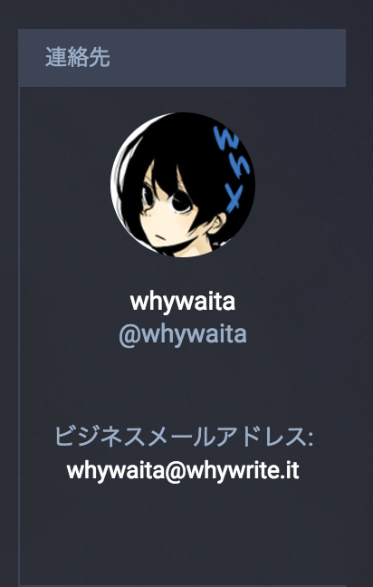

2本立て
2017-06-04
Dentoo.LT #17
うなすけ
アイアム
- うなすけ
- twitter: yu_suke1994
- 株式会社spice life
- インフラ部
結局mastodonなんて誰も見てないんだな💢💢💢💢
Do you have a こんな経験?
「あ〜次のdentoo.ltいつだっけ???」
次のDentoo.LTの日付がJSONで返ってくるだけ
@whywaita 徒労では????????
例えばRubyだとRuby on Rails
hanami がありますね
想定される質問
- Q : [任意の質問がここに入ります]
- A : Issue/PullReqお待ちしております
aws-sdk-ruby
Aws::ECS::Clientの
- create_service
- update_service
aws-sdk-ruby
Aws::ECS::Client
- create_service
- update_service
aws-sdk-ruby
Aws::ECS::Client#create_service
roleを渡すとrole_arnが返ってくる
aws-sdk-(ruby|go)共通の許さんポイント
ドキュメントのUXがオワコン
戻る/進むができない
例aws-sdk-ruby